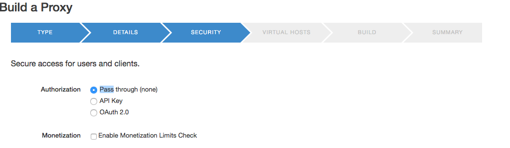
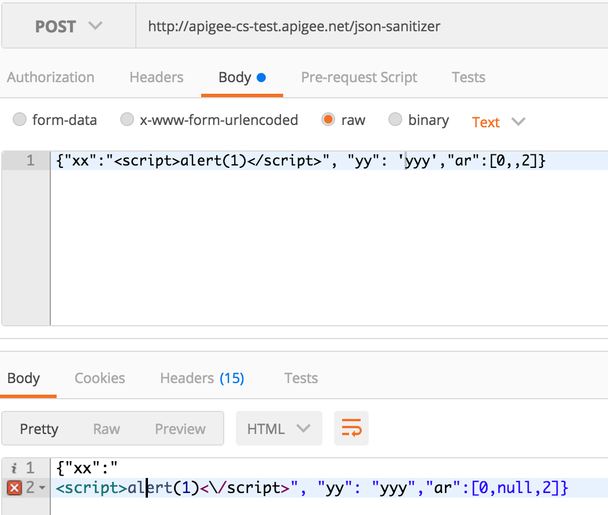
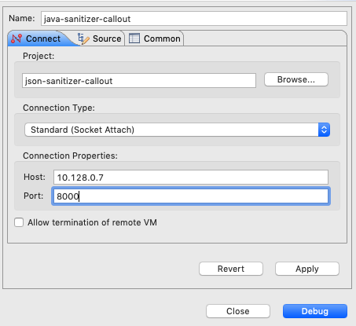

The Codelab walks you through the experience of creating an Edge Java Callout for end-to-end experience using Eclipse as an IDE.
The repository contains Edge .jar file we need to compile and test our Java Callout.
https://github.com/apigee/api-platform-samples/tree/master/doc-samples/java-cookbook/lib
1. Copy expressions-1.0.0.jar and message-flow-1.0.0.jar to ~/projects/json-sanitizer-policy/edge-jar-library
2. Install local copies of Edge dependencies
mvn install:install-file \ -Dfile=expressions-1.0.0.jar \ -DgroupId=com.apigee \ -DartifactId=expressions \ -Dversion=1.0.0 \ -Dpackaging=jar \ -DgeneratePom=true mvn install:install-file \ -Dfile=message-flow-1.0.0.jar \ -DgroupId=com.apigee \ -DartifactId=message-flow \ -Dversion=1.0.0 \ -Dpackaging=jar \ -DgeneratePom=true
1. Generate a Java project
mvn archetype:generate -DgroupId=com.apigee \ -DartifactId=json-sanitizer-callout \ -DarchetypeArtifactId=maven-archetype-quickstart \ -DinteractiveMode=false
2. In the generated pom.xml file, for junit dependency, change JUnit version from 3.8.1 to 4.12
Change version from 1.0-SNAPSHOT to 1.0.
3. Add Edge dependencies
<dependency>
<groupId>com.apigee</groupId>
<artifactId>expressions</artifactId>
<version>1.0.0</version>
<scope>provided</scope>
</dependency>
<dependency>
<groupId>com.apigee</groupId>
<artifactId>message-flow</artifactId>
<version>1.0.0</version>
<scope>provided</scope>
</dependency>4. Add json-sanitizer dependency.
Go to https://search.maven.org/#artifactdetails%7Ccom.mikesamuel%7Cjson-sanitizer%7C1.1%7Cjar and copy Apache Maven section of the Dependency Information to the pom.xml file
<dependency>
<groupId>com.mikesamuel</groupId>
<artifactId>json-sanitizer</artifactId>
<version>1.1</version>
</dependency>5. Add jmockit dependency for junit tests.
<dependency>
<groupId>org.jmockit</groupId>
<artifactId>jmockit</artifactId>
<version>1.36</version>
<scope>test</scope>
</dependency>1. Launch Eclipse.
2. Select File/Import...
3. Select Maven/Existing Maven Project.
4. In the Import Maven Projects dialog, Maven Projects step, browse to the Root Directory.
~/projects/json-sanitizer-policy/json-sanitizer-callout
Select folder, click Open button.
5. Press Finish button to import the project.
1. Right-click App.java class in the src/main/java/com.apigee package and select Delete.
2. Right-click src/main/java source folder and select New/Class
Change Package Name to: com.apigee.jsonsanitizer
Class name to: JsonSanitizerCallout
3. Click on Add... button on the right of Interfaces list. Select Execution from com.apigee.flow.execution.spi package.
4. Press Finish.
5. Type in the code of the JsonSanitizerCallout execute() method implementation.
package com.apigee.jsonsanitizer;
package com.apigee.jsonsanitizer;
import com.apigee.flow.execution.ExecutionContext;
import com.apigee.flow.execution.ExecutionResult;
import com.apigee.flow.execution.spi.Execution;
import com.apigee.flow.message.MessageContext;
import com.google.json.JsonSanitizer;
public class JsonSanitizerCallout implements Execution {
public ExecutionResult execute(MessageContext messageContext, ExecutionContext executionContext) {
try{
String contentType = messageContext.getMessage().getHeader("Content-Type");
if( !(contentType == null) && contentType.toLowerCase().endsWith("json") ){
String request = messageContext.getMessage().getContent();
String json = JsonSanitizer.sanitize(request);
messageContext.getMessage().setContent(json);
messageContext.getRequestMessage().setHeader("Content-Length", json.length());
}
return ExecutionResult.SUCCESS;
}catch( Exception e ){
return ExecutionResult.ABORT;
}
}
}1. Right-click AppTest.java class in the src/test/java/com.apigee package and select Delete.
2. Right-click src/test/java source folder and select New/Class
Change Package Name to: com.apigee.jsonsanitizer
Class name to: JsonSanitizerCalloutTest
3. Press Finish.
4. Type in the code of the JUnit callout test class.
package com.apigee.jsonsanitizer;
import static org.junit.Assert.*;
import java.util.HashMap;
import java.util.Map;
import mockit.Mock;
import mockit.MockUp;
import org.junit.Before;
import org.junit.Test;
import com.apigee.flow.execution.ExecutionContext;
import com.apigee.flow.message.MessageContext;
public class JsonSanitizerCalloutTest {
MessageContext messageContext;
ExecutionContext executionContext;
@Before
public void testSetup(){
messageContext = new MockUp<MessageContext>() {
private Map<String,Object> variables;
public void $init(){
getVariables();
}
private Map<String,Object> getVariables(){
if( variables == null){
variables = new HashMap<String,Object>();
}
return variables;
}
@Mock
public Object getVariable(final String name){
return getVariables().get(name);
}
@Mock
public boolean setVariable(final String name, final Object value){
getVariables().put(name, value);
return true;
}
}.getMockInstance();
executionContext = new MockUp<ExecutionContext>(){}.getMockInstance();
}
@Test
public void sanitizeMessageContent(){
messageContext.setVariable("message.content", "{\r\n" +
" \"header\":{\r\n" +
" \"version\":\"1.0\",\r\n" +
" \"serviceName\":\"IPPEligibility\",\r\n" +
" \"timestamp\":\"2016-05-29 09:39:16\",\r\n" +
" \"uniqueRefNo\":\"12<1212\",\r\n" +
" \"orgID\":\"EBI\"\r\n" +
" },\r\n" +
" \"ippEligibilityReq\":: {\r\n" +
" \"creditCardNo\": \"fAFopAArD+6BXMzQqk+yI9d3V2bX77vbiFqF3jckNNY=\",\r\n" +
" \"merchantId\": \"31442\",\r\n" +
" \"amount\": \"1000\"\r\n" +
" }\r\n" +
"}\r\n" +
"");
JsonSanitizerCallout callout = new JsonSanitizerCallout();
callout.execute(messageContext, executionContext);
assertEquals(3,4);
}
}
5. Right-click project and select Run As/JUnit Test
1. In the pom.xml file add section to package the jar file with dependencies
<build>
<finalName>${artifactId}-${version}</finalName>
<plugins>
<plugin>
<artifactId>maven-assembly-plugin</artifactId>
<version>2.6</version>
<configuration>
<descriptorRefs>
<descriptorRef>jar-with-dependencies</descriptorRef>
</descriptorRefs>
<appendAssemblyId>false</appendAssemblyId>
</configuration>
<executions>
<execution>
<id>make-assembly</id>
<phase>package</phase>
<goals>
<goal>single</goal>
</goals>
</execution>
</executions>
</plugin>
</plugins>
</build>2. Right-click the project and choose Run As/Maven Build...
3. Give it a nice name: json-sanitizer-callout package.
4. Enter package as a goal into the Goals field.
5. Press Run.
The resultant .jar file will be generated and placed in the project target directory.
1. In APIs/API Proxies, select + API Proxy button.
2. In the Build Proxy wizard, select proxy type No Target Radio button. Press Next.
3. Enter json-sanitizer Proxy Name field value in the DETAILS. Click Next
4. In the SECURITY page of the wizard, chose Pass through (none) radio-button option. Click Next

1. In the VIRTUAL HOSTS, make sure that default vhost is selected.
2. In the BUILD page of the wizard, make sure that the proxy is deployed into the test environment.
3. Click Build and Deploy button.
The proxy will be generated, uploaded, and deployed to the test env.
4. Click on the json-sanitizer link to open the editor.
1. Activate DEVELOP tab of the proxy editor.
2. In the Navigator view, select the PostFlow item of the default proxy in the Proxy Endpoints section.
3. Click on the + Step button on the left side of the Flow: PostFlow diagrammer below RESPONSE arrow.
4. In the Add Step dialog, select Assign Message policy in the MEDIATION section.
5. Populate Display Name and Name fields as AssignMessage.Echo.
Click Add.
6. Define the AssignMessage.Echo policy as:
<AssignMessage async="false" continueOnError="false" enabled="true" name="AssignMessage.Echo">
<DisplayName>AssignMessage.Echo</DisplayName>
<Copy source="request"/>
<AssignTo createNew="false" transport="http" type="response"/>
</AssignMessage>7. Click Save button to save and deploy the proxy.
1. In the PostMan, execute POST request to the http://apigee-cs-test.apigee.net/json-sanitizer endpoint passing the application/json body:
{"xx":"<script>alert(1)</script>", "yy": 'yyy',"ar":[0,,2]}It will return the same body, i.e., echo the request into response.
{"xx":"<script>alert(1)</script>", "yy": 'yyy',"ar":[0,,2]}
1. In the DEVELOP tab of the editor, select PreFlow of the default Proxy Endpoint.
2. Click on the + Step button on the right of the Flow: PreFlow editor above REQUEST arrow.
3. In the Add Step dialog, select Java Callout from the EXTENSION section. Give it a JavaCallout.JSONSanitizer name and display name.
4. Click on Choose File button and select json-sanitizer-callout-1.0.jar file. The Script Name field fill be automatically populated by the .jar file name.
Click Add.
5. In the opened JavaCallout.JSONSanitizer policy editor, enter correct class name that implements Execution.execute() interface method.
ResourceURL: json-sanitizer-callout-1.0.jar
ClassName: com.apigee.jsonsanitizer.JsonSanitizerCallout
6. Click on Save button to save and deploy the proxy.
1. Execute the POST request to the proxy endpoint http://apigee-cs-test.apigee.net/json-sanitizer
Pre-policy invocation Body:
{"xx":"<script>alert(1)</script>", "yy": 'yyy',"ar":[0,,2]}This time the result will look differently, as OWASP json-sanitizer will sanitize and secure the JSON datagram in the request body.
Post-policy invocation Body:
{"xx":"
<script>alert(1)<\/script>", "yy": "yyy","ar":[0,null,2]}
Unless your Java Callout contains a couple of lines, it is good to be able to debug it. Mocking permits you conveniently debug most if not all code with your local development environment. Saying that, it is important to be able to debug a callout in context of a real Message Processor. Java remote debugging facility permits you to do this. Of course, you need an access to an OPDK environment to be able to reconfigure Message Processor JVM process. Usually, All-In-One installation of Edge provides perfect isolated development environment.
1. On an MP node, add debug_port=8000 by editing or creating message-processor.properties file
# vi /opt/apigee/customer/application message-processor.properties debug_port=8000
2. Restart MP component
apigee-service edge-message-processor restart
3. Verify that debug setting is activated. Look for the -Xdebug -Xrunjdwp:transport=dt_socket,server=y,suspend=n,a
ddress=8000 signature.
# ps -eaf|grep 8000 apigee 4224 1 0 07:30 ? 00:04:23 /usr/lib/jvm/jre/bin/java -classpath /opt............var/log/edge-message-processor -Xdebug -Xrunjdwp:transport=dt_socket,server=y,suspend=n,a ddress=8000 com.apigee.kernel.MicroKernel
This setting provides you with an ability to attach and detach to a process under debugging at any point of time.
1. In the Eclipse, select Run/Debug Configurations... menu item.
2. In the left-side pane, select Remote Java Application line.
3. Right-click it and choose New Configuration context-menu item.
4. Enter java-sanitizer-callout as Name.
5. Click on Browse... button in the Project section and select java-sanitizer-callout project.
6. In the Connection Properties section enter IP address of your MP node and port 8000.

7. Click Apply and Close.
1. In the JsonSanitizerCallout.java file, double-click on line 22 gutter to flip a breakpoint.
2. Select Run/Debug Configuration... menu item.
3. Select Remote Java Application/java-sanitizer-callout configuration at the left side of the dialog.
4. Click Debug button to initiate remote debug session.
The Eclipse will switch to the Debug Perspective and attach itself to the running Message Processor instance. You will see all threads of MP's JVM.
5. Initiate an http request to the json-sanitizer proxy.
You are stopped at the breakpoint and can inspect any variables of the current state.
6. Click at the Step Into (F5), Step Over(F6), or Resume (F8) button to continue execution.
7. The request processing is continued as appropriate.
8. Select Run/Disconnect menu item to detach the remote debugger from the live process.
1. Execute a POST request in Postman to deploy .jar file of Java Callout policy using Management API
2. To check, send the GET request to return the contents of org-level resource files collection, by calling URL
https://api.enterprise.apigee.com/v1/o/apigee-cs/resourcefiles